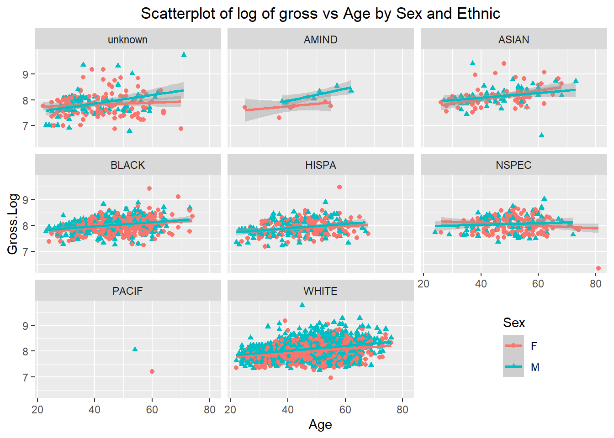

Chapter 10 The messy salary data
This original data set is taken from the Payroll Data from online “https://data.ct.gov/Government/State-Employee-Payroll-Data-Calendar-Year-2015-thr/virr-yb6n/data”, Which include Calendar Year 2015 through the most recent pay period for Connecticut state employees. We take the subset only for 2017 fiscal year, which include the information of more than 1.77 million observations and 38 variables. There are 102,101 employees listed there. For convenience of analysis, we randomly took 8500 employees from the original data. For our sampled data set (“state_empoyee_salary_data_2017.csv”), we are interested in the relationship between income with other variables like age, sex, ethnic, union and so on. We will focus on the full time employees who got 26 pay checks in 2017 fiscal year. First we will clean our sampled data set.
10.1 Read in and clean data
raw0 <- read.csv("datasets/State_Employee_Payroll_Data_Calendar_Year_2015_through_Present.csv")
str(raw0)
employID <- unique(raw0$EmplId.Empl.Rcd)
sample <- sample(employID, 8500)
raw <- raw0[raw0$EmplId.Empl.Rcd %in% sample, ] %>% droplevels()
str(raw)
write.csv(raw, file = "datasets/state_employee_salary_data_2017.csv", row.names = FALSE)From the sampled data set, We will pick full time employees as our goal and focus on the interested variables.
library(dplyr)
raw <- read.csv("datasets/state_employee_salary_data_2017.csv")
raw1 <- filter(raw, Full.Part == "F") # pick full time employee
raw2 <- raw1[, -c(1:2, 5:9, 11:12, 19:23, 31:33, 35:36)] # keep only the interested variablesWe remove the variables we are not interested in. Now we will check the situation of employees.
EmplId.Empl.Rcd <- as.character(raw2$EmplId.Empl.Rcd)
counts <- data.frame(table(EmplId.Empl.Rcd))
PersonOccurCount <- table(counts[, 2])
plot(PersonOccurCount, col = rainbow(30),
xlab = "Occurance of employee", ylab = "Count of employee")Figure 10.1: Situation of check occurance of employees
The most employees occurrence is 26. We will focus on the employees who have 26 paychecks for whole year in 2017.
subEmpl26 <- counts[which(counts$Freq != 26), ]
len <- length(subEmpl26$EmplId.Empl.Rcd)
for(i in 1:len){
j <- which(raw2$EmplId.Empl.Rcd == as.character(subEmpl26$EmplId.Empl.Rcd)[i])
if(i == 1) id = j
else if(i > 1) id = c(id, j)
}
raw26 <- raw2[-id, ] # remove employees with check count not equal 26We removed employees with check count unequal to 26.
Check.Dt <- gsub(" 12:00:00 AM", "", raw26$Check.Dt)
counts <- table(Check.Dt)
barplot(counts, col = rainbow(26), axis.lty = 1, xlab = "Check Date", ylab = "Count")Figure 10.2: The counts of checks for check date in 2017
The counts of checks for bi week almost the same, which means the employees kept same all the time in 2017 except 03/08/2017. We will remove the employee in this check date.
empl38 <- raw26[which(raw26$Check.Dt == "03/08/2017 12:00:00 AM"), ]
raw26 <- raw26[-which(raw26$EmplId.Empl.Rcd == empl38$EmplId.Empl.Rcd), ]We check the situation whether different genders are indexed for same employee.
df <- raw26 %>%
group_by(EmplId.Empl.Rcd, Sex) %>%
summarise(Total.Gross = sum(Tot.Gross ))
dupliSex <- df[duplicated(df$EmplId.Empl.Rcd), ]## Warning: Factor `EmplId.Empl.Rcd` contains implicit NA, consider using
## `forcats::fct_explicit_na`## Warning: Factor `EmplId.Empl.Rcd` contains implicit NA, consider using
## `forcats::fct_explicit_na`## # A tibble: 0 x 3
## # Groups: EmplId.Empl.Rcd [1]
## # ... with 3 variables: EmplId.Empl.Rcd <fct>, Sex <fct>, Total.Gross <dbl>There is no employee having different sex recorded. We will check whether sex “U” employee is still in our data
## [1] DeptID EmplId.Empl.Rcd Check.Dt
## [4] Annnual.Rate Bi.Weekly.Comp.Rate Other
## [7] Fringe Overtime Salaries...Wages
## [10] Tot.Gross Age Job.Cd.Descr
## [13] EE.Class.Descr Job.Indicator Ethnic.Grp
## [16] Sex City Union.Descr
## [19] Agency
## <0 rows> (or 0-length row.names)sex “U” employees are already removed. Then we will check about the duplication situation of ethnic group.
df <- raw26 %>%
group_by(EmplId.Empl.Rcd, Ethnic.Grp) %>%
summarise(Total.Gross = sum(Tot.Gross ))
dupliEthnic.Grp <- df[duplicated(df$EmplId.Empl.Rcd), ]## Warning: Factor `EmplId.Empl.Rcd` contains implicit NA, consider using
## `forcats::fct_explicit_na`## Warning: Factor `EmplId.Empl.Rcd` contains implicit NA, consider using
## `forcats::fct_explicit_na`## # A tibble: 0 x 3
## # Groups: EmplId.Empl.Rcd [1]
## # ... with 3 variables: EmplId.Empl.Rcd <fct>, Ethnic.Grp <fct>,
## # Total.Gross <dbl>There is no different ethnic recorder for the same employee.
Now we notice that some employees even have gross income or biweekly rate less then zero. We consider to remove those employees.
salary <- raw26
subGross0 <- salary[which(salary$Tot.Gross <= 0 | salary$Bi.Weekly.Comp.Rate <= 0), ]
len <- length(unique(subGross0$EmplId.Empl.Rcd))
for(i in 1:len){
j <- which(salary$EmplId.Empl.Rcd == unique(subGross0$EmplId.Empl.Rcd)[i])
if(i == 1) id = j
else if(i > 1) id = c(id, j)
}
salary <- salary[-id, ] #remove employees with negative or zero Tot.Gross and Bi.Weekly.Comp.RateWe removed employees with negative or zero Tot.Gross and biweekly rate too. Now let’s check the distribution of total gross.
Figure 10.3: Scatterplot of total gross income
Most total gross point scatter under $20000, some of them are even above $60000. We will not keep those employees with Job.Indicator as “S” too.
subIndicator <- salary[which(salary$Job.Indicator == "S"), ]
len <- length(unique(subIndicator$EmplId.Empl.Rcd))
for(i in 1:len){
j <- which(salary$EmplId.Empl.Rcd == unique(subIndicator$EmplId.Empl.Rcd)[i])
if(i == 1) id = j
else if(i > 1) id = c(id, j)
}
salary <- salary[-id, ] #remove employees with Job indicator as "S"Employees with Job indicator as “S” are moved. We also will not consider those employees with duplicated union descriptions.
df <- salary %>%
group_by(EmplId.Empl.Rcd, Union.Descr) %>%
summarise(Total.Gross = sum(Tot.Gross ))
dupliUnion <- df[duplicated(df$EmplId.Empl.Rcd), ]
len <- length(dupliUnion$EmplId.Empl.Rcd)
for(i in 1:len){
j <- which(salary$EmplId.Empl.Rcd == dupliUnion$EmplId.Empl.Rcd[i])
if(i == 1) id = j
else if(i > 1) id = c(id, j)
}
salary <- salary[-id, ] # remove employees with different Union descreptionFinally, we cleaned our data according to our interest and we will group our left observations according to employee ID “EmplId.Empl.Rcd”, and just select variables like sex, ethnic group, union description, age, total gross and biweekly rate. We take round age for each employee.
salary <- salary %>% group_by(EmplId.Empl.Rcd, Sex, Ethnic.Grp, Union.Descr) %>%
summarise(Age = round(mean(Age), 0), Tot.Gross = mean(Tot.Gross),
Bi.Weekly.Rate = mean(Bi.Weekly.Comp.Rate)) %>%
group_by(EmplId.Empl.Rcd) %>% filter(n() == 1) %>% droplevels()
str(data.frame(salary))## 'data.frame': 3441 obs. of 7 variables:
## $ EmplId.Empl.Rcd: Factor w/ 3441 levels "00034CF9004E4E0D7872FEB52CB5933F",..: 1 2 3 4 5 6 7 8 9 10 ...
## $ Sex : Factor w/ 2 levels "F","M": 1 1 2 1 1 2 2 1 1 2 ...
## $ Ethnic.Grp : Factor w/ 8 levels "","AMIND","ASIAN",..: 8 8 8 8 8 8 6 5 8 8 ...
## $ Union.Descr : Factor w/ 54 levels "Admin and Residual (P-5)",..: 9 2 7 24 24 43 35 41 37 44 ...
## $ Age : num 73 64 65 54 50 46 71 47 52 48 ...
## $ Tot.Gross : num 4176 1799 1935 2751 2195 ...
## $ Bi.Weekly.Rate : num 3995 1776 1931 2713 2195 ...There is one level marked as "" in ethnic group, which means unknown for us.
We replace level of empty space in Ethnic.Grp as “unknown”.
## 'data.frame': 3441 obs. of 7 variables:
## $ EmplId.Empl.Rcd: Factor w/ 3441 levels "00034CF9004E4E0D7872FEB52CB5933F",..: 1 2 3 4 5 6 7 8 9 10 ...
## $ Sex : Factor w/ 2 levels "F","M": 1 1 2 1 1 2 2 1 1 2 ...
## $ Ethnic.Grp : Factor w/ 8 levels "unknown","AMIND",..: 8 8 8 8 8 8 6 5 8 8 ...
## $ Union.Descr : Factor w/ 54 levels "Admin and Residual (P-5)",..: 9 2 7 24 24 43 35 41 37 44 ...
## $ Age : num 73 64 65 54 50 46 71 47 52 48 ...
## $ Tot.Gross : num 4176 1799 1935 2751 2195 ...
## $ Bi.Weekly.Rate : num 3995 1776 1931 2713 2195 ...## EmplId.Empl.Rcd Sex Ethnic.Grp
## 00034CF9004E4E0D7872FEB52CB5933F: 1 F:1804 WHITE :2101
## 001D621CF1C85C8F46EFD935CD685BFD: 1 M:1637 BLACK : 485
## 004C3FFCCFC10A09D65CA3DF60CB69FD: 1 HISPA : 283
## 0059143835BC7A37482ABF4B933A4642: 1 NSPEC : 236
## 0059CD55728E16BC6BCFD35EDBA9DA32: 1 unknown: 211
## 007CE08D82395FFD546943D382911009: 1 ASIAN : 109
## (Other) :3435 (Other): 16
## Union.Descr Age Tot.Gross
## Service/Maintenance (NP-2) : 299 Min. :22.00 Min. : 568.7
## Correctional Officers (NP-4) : 289 1st Qu.:40.00 1st Qu.: 2414.2
## Social and Human Services(P-2): 263 Median :49.00 Median : 3041.0
## Administrative Clerical (NP-3): 252 Mean :47.71 Mean : 3222.5
## Admin and Residual (P-5) : 214 3rd Qu.:56.00 3rd Qu.: 3754.7
## Health Professional (P-1) : 198 Max. :81.00 Max. :17530.3
## (Other) :1926
## Bi.Weekly.Rate
## Min. : 25.78
## 1st Qu.: 2145.94
## Median : 2656.14
## Mean : 2894.14
## 3rd Qu.: 3443.95
## Max. :12884.62
## Now 3441 employees are included in our data set. These employees include both male and female, aged from 22 to 81, group into 8 different ethnics. They belong to 54 different Unions. The minimum total gross is $568.7 and maximum is $17530.3. Biweekly rate range from $25.78 to $12884.62.
As for this salary data, we will focus on the total gross income of these state employees. We are interested in the points such as: How about the distribution of the total gross income? Are male and female paid equally? Is there any difference in total gross for different age and age group? Do some ethnic group get better pay than the others? What’s the most important factor effect the gross income for these state employees?
From previous plots of total gross, we need to transform total gross first.
10.2 Information about the variables
10.2.1 Income and age
variable <- c("Tot.Gross", "Gross.Log", "Age") # pick up the numeric columns according to the names
par(mfrow = c(3, 2)) # layout in 3 rows and 3 columns
for (i in 1:length(variable)){
sub <- unlist(salary[variable[i]])
submean <- mean(sub)
hist(sub, main = paste("Hist. of", variable[i], sep = " "), xlab = variable[i])
abline(v = submean, col = "blue", lwd = 1)
qqnorm(sub, main = paste("Q-Q Plot of", variable[i], sep = " "))
qqline(sub)
if (i == 1) {s.t <- shapiro.test(sub)
} else {s.t <- rbind(s.t, shapiro.test(sub))
}
}
Figure 10.4: Histogram and QQ plot for total gross, log of gross and age
s.t <- s.t[, 1:2] # take first two columns of shapiro.test result
s.t <- cbind(variable, s.t) # add variable name for the result
s.t## variable statistic p.value
## s.t "Tot.Gross" 0.840075 2.490722e-50
## "Gross.Log" 0.9888379 7.88885e-16
## "Age" 0.9848966 1.023745e-18Tot gross is not statistically normally distributed. It’s extremely left skewed distributed.
The distribution of Gross.Log, transformation of Tot.Gross is closer to normality than Tot.Gross. The highest frequency of Gross.Log is round 8.
Highest frequency employees are aged between 45 and 50 years old. The distribution is close to bell shape.
Shapiro tests deny the normality of all these three numeric variables.
10.2.2 Ethnic group
library(ggplot2)
counts <- data.frame(sort(table(salary$Ethnic.Grp), decreasing = TRUE))
perc <- paste(round(counts$Freq/sum(counts$Freq), 2)*100, "%", sep = "")
ggplot(counts, aes(x = reorder(Var1, Freq), y = Freq)) +
geom_bar(stat = 'identity', fill = rainbow(8)) +
geom_text(aes(x = c(8:1), y = Freq + 100 , label = perc), size = 3.5) +
labs(x = 'Ethnic Group', y = 'Freqency', title = 'Ethnic group by count') +
theme_bw() + # classic dark-on-light
coord_flip() + # flip the plot
theme(plot.title = element_text(hjust = 0.5)) 
61% of state employees are white, 14% are black. AMIND and PACIF are very limited.
10.2.3 Sex
##
## Attaching package: 'plotrix'## The following object is masked from 'package:scales':
##
## rescale## The following object is masked from 'package:gplots':
##
## plotCIcounts <- sort(table(salary$Sex), decreasing = TRUE)
#labels with count number and percentage
p <- paste(round(counts/sum(counts), 2)*100, "%", sep = "")
lbls <- paste(names(counts), "\n", counts, p, sep = " ")
pie3D(counts, labels = lbls, explode = 0.05,
main = "Pie chart of sex", labelcex = 1.0, labelpos=c(1.8, 5.0))
There are around 4% more female than male in the state employees.
10.2.4 Union descreption
top10Union <- data.frame(sort(table(salary$Union.Descr), decreasing = TRUE)[1:10])
names(top10Union)[1] <- "Union.Descr"
topUnion <- salary %>%
group_by(Union.Descr) %>%
summarise(Avg.Gross.Log = round(mean(Gross.Log), 3)) %>%
arrange(desc(Avg.Gross.Log)) %>%
head(10)
df <- data.frame(top10Union, topUnion)
names(df)[1]<- "Top union by count"
names(df)[3]<- "Top union by log of gross"
library(knitr)
kable(df, booktabs=TRUE, caption = "Top union by count and average log value of gross")| Top union by count | Freq | Top union by log of gross | Avg.Gross.Log |
|---|---|---|---|
| Service/Maintenance (NP-2) | 299 | UCHC - Faculty - AAUP | 8.927 |
| Correctional Officers (NP-4) | 289 | UCHC - Faculty | 8.710 |
| Social and Human Services(P-2) | 263 | Comm College Mgmt Exclusions | 8.693 |
| Administrative Clerical (NP-3) | 252 | UConn - Law School Faculty | 8.605 |
| Admin and Residual (P-5) | 214 | Amercan Fed of School Admin | 8.523 |
| Health Professional (P-1) | 198 | Connecticut Innovations Inc | 8.511 |
| Health NonProfessional (NP-6) | 189 | Exempt/Elected/Appointed | 8.510 |
| Engineer Scien Tech (P-4) | 181 | StatePoliceLts&Captains (NP-9) | 8.473 |
| UCHC Univ Hlth Professionals | 121 | Managerial | 8.416 |
| Managerial | 119 | Crim Justice Managerial Exempt | 8.389 |
The top unions by count are Service Maintain, Correctional officers, and Social & Human Services. But according to average gross, the first four are all come from university or college. Except Managerial, the top unions by count are totally different from top unions by average gross.
10.3 Analysis of gross income
10.3.1 Age
# p1 get bar plot
p1 <- salary %>%
group_by(Age) %>%
summarise(Avg.Gross = mean(Tot.Gross)) %>%
ggplot(aes(x = Age, y = Avg.Gross)) +
geom_bar(stat = 'identity', col = "lightblue") +
scale_x_continuous(breaks = seq(20, 90, 10)) +
labs(y = "Average gross income")
# p2 get density2D plot
p2 <- ggplot(salary, aes(x = Age, y = Gross.Log)) +
stat_density2d(aes(fill = ..density..^0.25), geom = "tile", contour = FALSE, n = 200) +
scale_fill_continuous(low = "white", high = "dodgerblue3") +
scale_x_continuous(breaks = seq(10, 100, 10)) +
scale_y_continuous(breaks = seq(2, 12, 1)) +
theme(legend.position = "none", panel.background = element_blank())
# display p1 and p2 in same row
library(gridExtra)
grid.arrange(p1, p2, nrow = 1)Figure 10.5: Average gross and log of gross distribution by age
In total, the older the employees, the higher their gross income. Lots of employees between age 50 and 60 have the similar log gross income around 8.
Now we separate age into groups with age gap of 10.
stat <- salary %>% group_by(Age.) %>% summarise(Avg.Gross.Log = mean(Gross.Log))
ggplot() +
geom_boxplot(data = salary, aes(x = Age., y = Gross.Log, fill = Age.)) +
geom_point(data = stat, aes(x = Age., y = Avg.Gross.Log), color = "brown") +
geom_text(data = stat, aes(label = round(Avg.Gross.Log, 2), x = Age., y = Avg.Gross.Log - 0.1)) +
theme(plot.title = element_text(hjust = 0.5))Figure 10.6: Distribution of log of gross by age group
With average 10 years of age increasing, log value of gross increase step by step until after age 80.
## Df Sum Sq Mean Sq F value Pr(>F)
## salary$Age. 6 33.0 5.500 54.53 <2e-16 ***
## Residuals 3434 346.4 0.101
## ---
## Signif. codes: 0 '***' 0.001 '**' 0.01 '*' 0.05 '.' 0.1 ' ' 1With p value of much less than 0.05, we reject the null hypothesis that there is no significant difference among these means of gross for different age groups.
## Warning: package 'agricolae' was built under R version 3.6.3# LSD.test need provide degrees of freedom and mean square for errors. We can got it from aov.
res <- LSD.test(salary$Gross.Log, salary$Age.,
DFerror = model$df.residual, MSerror=anova(model)[["Mean Sq"]][2])
res$groups## salary$Gross.Log groups
## [70,80) 8.284744 a
## [60,70) 8.122599 b
## [50,60) 8.068892 c
## [40,50) 8.032668 d
## [30,40) 7.913289 e
## [20,30) 7.756642 f
## [80,90) 6.343428 gFrom the information of pairwise comparison, the total different alpha beta index indicates that these 8 age groups are significantly different from each other in mean gross. The elder the age, the higher the gross income, except for age group between 80 and 90, its mean gross is the lowest comparing with all other age group.
library(scales)
library(plotly)
p <- salary %>%
group_by(Union.Descr, Age) %>%
summarise(Avg.Gross = mean(Gross.Log)) %>%
arrange(desc(Avg.Gross)) %>%
ggplot(aes(x = Age, y = Avg.Gross, fill = Union.Descr)) +
geom_bar(stat = "identity", position = "fill") +
scale_y_continuous(labels = percent_format()) +
scale_x_continuous(breaks = seq(10, 100, 10)) +
labs(y = "Percentage") +
theme(panel.background = element_rect(fill = "black"),
panel.grid.major = element_blank(), panel.grid.minor=element_blank())
ggplotly(p)Figure 10.7: Percentage of union descriptions by age group
This is the distribution of average gross percentage of Union Descriptions by age group. Use mouse we can find out the information of percentage occupation of union description for certain age. For example, for age 22, Administrative Clerical, Exempt/Elected/Appointed, Service/Maintenance and UCHC Univ Hlth Professional these four union share the total Log of gross almost equally, while for age 81, the only union is Legislative Management.
10.3.2 Sex
par(mfrow = c(1, 2))
# density plot for each sex
df1 <- salary[which(salary$Sex == "F"), ]
df2 <- salary[which(salary$Sex == "M"), ]
plot(density(df1$Gross.Log), col = "red", xlab = "Log of Gross",
main = "Density plot for each sex")
lines(density(df2$Gross.Log), col = "blue")
legend("topright", c("M","F"), lty = c(1, 1), col = c("blue", "red"))
# LSD comparison for sex grouop
model <- aov(salary$Gross.Log~salary$Sex)
res <- LSD.test(salary$Gross.Log, salary$Sex,
DFerror = model$df.residual, MSerror=anova(model)[["Mean Sq"]][2])
gross <- round(res$groups[, "salary$Gross.Log"], 2)
plot(res, xlab = "Sex Group", ylab = "Range between max and min",
main = "Sex groups and variation range")
text(x = c(seq(from = 1, to = 10, by = 1.2)), y = 8, gross)Figure 10.8: Log of gross comparison by sex group
Density plot shows blue male line is later than red female line, which means male has bigger log of gross than female in total. The density peak of female is earlier than male also tell the same story. The total different alpha beta index indicates that these 2 sex groups are significantly different from each other in mean log of gross, male get higher gross income than female.
# p1 produce the point and line plot
p1 <- salary %>%
group_by(Ethnic.Grp, Sex) %>%
summarise(Avg.Gross = mean(Gross.Log)) %>%
ggplot(aes(x = Ethnic.Grp, y = Avg.Gross, colour = Sex, group = Sex)) +
geom_line(size = 1) +
geom_point(size = 4, shape = 19) +
theme(axis.text.x = element_text(angle = 45, hjust = 1),
panel.grid.major = element_blank(),
legend.position = "bottom") +
labs(x = "Ethnic Group", y = "Average Gross Log")
# p2 produce the ensity ridge plot
library(ggridges)
p2 <- salary %>% group_by(Ethnic.Grp, Sex) %>%
ggplot(aes(x = Gross.Log, y = Ethnic.Grp, fill = Sex)) +
geom_density_ridges(alpha = 0.55) +
theme(legend.position = "bottom") +
xlim(6.0, 10.0)
# Lay out p1 and p2 in same row
library(gridExtra)
grid.arrange(p1, p2, nrow = 1)Figure 10.9: Log of gross comparison by ethnic and sex group
Both plots tell us that for other ethnic group except Asian, male have higher average gross than female. On average, Asian female earn similar as male. Amind male have more bigger log of gross than Amind female. From the point and line plot we can see the same situation for Pacif ethnic. Because of the tiny amount of PACIF employees, there is no ridge showing in the plot.
# Standardize Gross.Log first. Separate into two groups "Below average" and "Above average"
Sd.Gross <- round((salary$Gross.Log - mean(salary$Gross.Log))/sd(salary$Gross.Log), 2)
Gross.Type <- ifelse(Sd.Gross < 0, "Below average", "Above average")
Sex <- salary$Sex
Category <- salary$Union.Descr
df <- data.frame(Category, Sd.Gross, Gross.Type, Sex)
ggplot(df, aes(x = Category, y = Sd.Gross)) +
geom_bar(stat = 'identity', aes(fill = Gross.Type), width = .5) +
facet_wrap(~ Sex) +
labs(x = "Union Descreption", y = "Standardized log of gross") +
coord_flip() +
theme(plot.title = element_text(hjust = 0.5), legend.position = "top")Figure 10.10: Diverging bars of stanardized log of gross income
From the figure we can see that for both male and female, the pattern of above and below average for almost all of the union description are similar. The only difference is the difference in total standardized log value of gross for male and female. For example, for union UCHC Univ Hlth Professionals on top, administrative Clerical on the bottom and other two unions like service/maintenance and Correctional Officers, all these four unions have more standardized log value of gross below average, on the same time, female UCHC Univ Hlth Professionals, administrative Clerical and male service/maintenance and Correctional Officers get this value less comparing with the other gender in the same union. But for union Uconn Faculty and Engineer Scien Tech, or Health professional and Judicial Professional, more standardized log value of gross above average, but female Uconn Faculty and Engineer Scien Tech and male Health professional and Judicial Professional get less than the other gender in the same union.
10.3.3 Ethnic Group
# Bar plot with error bar for different ethnic group
p1 <- salary %>%
group_by(Ethnic.Grp) %>%
summarise(mean = mean(Gross.Log),
sd = sd(Gross.Log),
se = sd(Gross.Log)/sqrt(n())) %>%
ggplot(aes(x = Ethnic.Grp, y = mean, color = Ethnic.Grp, fill = Ethnic.Grp)) +
geom_bar(stat = "identity") +
geom_errorbar(aes(ymin =mean - se, ymax =mean + se), color = "black", width = 0.3) +
theme(axis.text.x = element_text(angle = 45, hjust = 1))
# Density ridges for different ethnic group
library(ggridges)
p2 <- salary %>% group_by(Ethnic.Grp) %>%
ggplot(aes(x = Gross.Log, y = Ethnic.Grp, color = Ethnic.Grp, fill = Ethnic.Grp)) +
geom_density_ridges(alpha = 0.5) +
xlim(6.0, 10.0) +
coord_flip() +
theme(legend.position = "none")
# display two plots in same row
grid.arrange(p1, p2, nrow = 1)Figure 10.11: Bar and density ridge plot of log of gross by ethnic
From the bar figure we can see that Asian and White have relatively high gross incomes, Pacif and unknown get lower gross incomes. There is no big difference of variance for all other ethnic groups but Pacif, next Amind. Density ridge plot shows White, Asian and Nespec have biggest density above log of gross of 8.5, while unknown, Amind and Hispa have more density below 8. Ethnic Black’s density keep even at both sides of log of gross of 8.
# get ethnic order according frequency of count
CountEthnic <- data.frame(sort(table(salary$Ethnic.Grp), decreasing = TRUE))
# get ethnic order according log of gross income
GrossEthnic <- salary %>%
group_by(Ethnic.Grp) %>%
summarise(Avg.Gross = mean(Gross.Log)) %>%
arrange(desc(Avg.Gross)) %>%
pull(Ethnic.Grp)
# build data frame for rank of these two ethnic order
EthnicGroup <- unlist(list(CountEthnic[, 1], GrossEthnic))
Rank <- rep(1:8, 2)
EthnicType <- rep(c("CountEthnic","GrossEthnic"), each = 8)
dat <- data.frame(Rank, EthnicType, EthnicGroup)
# point plot two set of ethnics according rank and connect same ethnic by line
ggplot(dat, aes(y = Rank, x = EthnicType, label = EthnicGroup, group = EthnicGroup) )+
geom_line(size = 1) +
geom_point(aes(color = EthnicGroup), size = 5) +
scale_y_continuous(breaks = seq(0,10,1)) +
annotate("text", x = 0.7, y = Rank[1:8], label = EthnicGroup[1:8], hjust = 0, cex = 3.5) +
annotate("text", x = 2.1, y = Rank[9:16], label = EthnicGroup[9:16], hjust = 0, cex = 3.5) Figure 10.12: Ethnic rank plot by count and log of gross
According to count, most of the state employees are white and Black. Hispa and Nspec occupy the third and fourth in the list. By average gross, the first Ethnic group is Asian, then Nspec and White. Black is in 4th place by gross. Pacif keeps the last for both count and average gross rank.
model <- aov(Gross.Log ~ Ethnic.Grp, data = salary)
tukey <- TukeyHSD(model)
par(mar = c(4, 10, 2, 1))
psig = as.numeric(apply(tukey$Ethnic.Grp[, 2:3], 1, prod) >= 0) + 1
plot(tukey, col = psig, las = 1, cex.axis = 0.7, yaxt = "n")
for (j in 1:length(psig)){
axis(2, at = j,labels = rownames(tukey$Ethnic.Grp)[length(psig) - j + 1],
las = 1, cex.axis = .8, col.axis = psig[length(psig) - j + 1])
}
There is no significant difference between the mean grosses of black pairs but the red pairs in plot: unknown with Asian, Black, Nspec and White; Asian with Black, Hispa and White; Black with Hispa and White; Hispa with Nespa and White.
ggplot(salary, aes(x = Age, y = Gross.Log, colour = Sex, shape = Sex)) +
geom_point() +
ggtitle("Scatterplot of log of gross vs Age by Sex and Ethnic") +
facet_wrap(~ Ethnic.Grp) + # make subplots by Ethnic Group
geom_smooth(aes(colour = Sex), method = 'lm',formula = y ~ x) + # add the regression line
theme(plot.title = element_text(hjust = 0.5), legend.position = c(0.85, 0.15))
In our data set, we have much more employees in white, but really little in Pacif. For both male and female, with increasing in age, log of gross increase slightly for all other ethnics but Nspec. For most ethnics, male and female have similar pattern for the relation between age and log of gross. For ethnic unknown and Amind, male’s log of gross increase faster than female, but for Asian, male’s log of gross increase slower than female.
10.4 Analysis of gross income type
10.4.1 Gross Type
According to the average log of gross for each employee, we separate the employees into three group: High.Gross with average log of gross greater than 8.5, Middle.Gross with average log of gross greater than 7.8, and Low.Gross with average log of gross equal or less than 7.8.
#regroup gross by average log of gross for each EmplId.Empl.Rcd as Gross.Type
High.Gross <- as.vector(salary$EmplId.Empl.Rcd[which(salary$Gross.Log > 8.5)])
Middle.Gross <- as.vector(salary$EmplId.Empl.Rcd[which(salary$Gross.Log > 7.8)])
salary <- salary %>%
mutate(Gross.Type =
ifelse(EmplId.Empl.Rcd %in% High.Gross, "High",
ifelse(EmplId.Empl.Rcd %in% Middle.Gross, "Middle",
"Low")))For each gross type, we try to get information about total number of observation, percentage, employee number, average log of gross, average of total gross and standardized total gross.
##
## Attaching package: 'janitor'## The following objects are masked from 'package:stats':
##
## chisq.test, fisher.testdf1 <- salary %>% group_by(Gross.Type) %>%
tabyl(Gross.Type)
df2 <- salary %>% group_by(Gross.Type) %>%
summarise(Avg.Log.Gross = mean(Gross.Log), Avg.Tot.Gross = mean(Tot.Gross))
df <- merge(df1, df2, by="Gross.Type") %>% arrange(desc(Avg.Log.Gross))
df <- round(df[, 2:5], 2) # round all numeric variables to decimal 2
Gross.Type = c("High, Gross.Log>8.5", "Middle, Gross.Log>7.8","Low, Gross.Log<=7.8")
df <- cbind(Gross.Type, df)
kable(df, booktabs=TRUE, caption = "Table of gross type")| Gross.Type | n | percent | Avg.Log.Gross | Avg.Tot.Gross |
|---|---|---|---|---|
| High, Gross.Log>8.5 | 217 | 0.06 | 8.72 | 6307.37 |
| Middle, Gross.Log>7.8 | 2329 | 0.68 | 8.11 | 3379.69 |
| Low, Gross.Log<=7.8 | 895 | 0.26 | 7.62 | 2065.61 |
df$Gross.Type <- factor(df$Gross.Type, levels = df$Gross.Type)
ggplot(df, aes(x = Gross.Type,
label = paste(Avg.Tot.Gross, paste(percent*100, "%", sep = ""), sep = ", "))) +
geom_bar(aes(y = n), stat = "identity", fill = rainbow(3)) +
geom_line(aes(y = Avg.Log.Gross*250, group = 1, colour = "Avg.Tot.Gross*250"), size = 2) +
geom_point(aes(y = Avg.Log.Gross*250, group = 1, colour = "Avg.Tot.Gross*250"), size = 4) +
labs(x = "Gross Type", y = "Employee Number",
title = "Average gross and employee distribution for each gross type") +
theme(plot.title = element_text(hjust = 0.5)) +
geom_text(x= c(1, 2, 3), y = c(2000, 1900, 1800), size = 4, color = "black")
High gross group occupy 6% of the total employees. Around 68% employees earned middle gross, and around 26% employees earned low. The gross decrease straightly. The real average total gross change from 6307 dollars/Bi-weekly to 3380, then to 2066 for high, middle and low gross group. The average real gross income for high gross group is more than 3 times of that for low gross group.
10.4.2 Ethnic and Sex and age
salary %>% mutate(EthnicSex = paste(Ethnic.Grp, Sex, sep = "-")) %>%
tabyl(EthnicSex, Gross.Type, show_missing_levels = FALSE) %>%
adorn_totals("row") %>%
adorn_totals("col") %>%
adorn_percentages("all") %>%
adorn_pct_formatting(digits = 1) %>%
adorn_ns %>%
adorn_title ## Gross.Type
## EthnicSex High Low Middle Total
## AMIND-F 0.0% (0) 0.1% (5) 0.1% (3) 0.2% (8)
## AMIND-M 0.0% (1) 0.0% (0) 0.1% (5) 0.2% (6)
## ASIAN-F 0.3% (10) 0.3% (11) 1.0% (36) 1.7% (57)
## ASIAN-M 0.2% (7) 0.2% (6) 1.1% (39) 1.5% (52)
## BLACK-F 0.3% (10) 2.5% (86) 5.8% (199) 8.6% (295)
## BLACK-M 0.3% (11) 1.2% (42) 4.0% (137) 5.5% (190)
## HISPA-F 0.1% (3) 1.7% (60) 2.8% (95) 4.6% (158)
## HISPA-M 0.1% (3) 1.4% (47) 2.2% (75) 3.6% (125)
## NSPEC-F 0.2% (7) 1.0% (33) 2.9% (101) 4.1% (141)
## NSPEC-M 0.2% (8) 0.8% (26) 1.8% (61) 2.8% (95)
## PACIF-F 0.0% (0) 0.0% (1) 0.0% (0) 0.0% (1)
## PACIF-M 0.0% (0) 0.0% (0) 0.0% (1) 0.0% (1)
## unknown-F 0.3% (10) 1.9% (64) 1.7% (57) 3.8% (131)
## unknown-M 0.2% (6) 1.2% (41) 1.0% (33) 2.3% (80)
## WHITE-F 1.1% (37) 7.6% (261) 20.8% (715) 29.4% (1013)
## WHITE-M 3.0% (104) 6.2% (212) 22.4% (772) 31.6% (1088)
## Total 6.3% (217) 26.0% (895) 67.7% (2329) 100.0% (3441)In high gross type, white male are occupy much bigger portion than any other male or female ethnic group. For other ethnic group with high gross income, female portion is equal or higher than male.
Situation keeps similar as high gross type for middle gross type, white and Asian male occupy more portion than white and Asian female, while for other ethnics, female is more than male.
For low gross type, no matter the ethnic the employees belong, female is more than male.
In total, only for white, its male is more than female, for all other ethnics, female is more than male.
For all other ethnics, over half of the employees belong to middle gross type, but unknown group have more people in low gross type.
library(ggmosaic)
h_mosaic <- ggplot(data = salary) +
geom_mosaic(aes(x = product(Sex, Ethnic.Grp), fill = Age.), na.rm=T, divider=mosaic("h")) +
theme(plot.title = element_text(hjust = 0.5),
axis.text.x = element_text(angle = 90, size=6),
legend.position="top",legend.text=element_text(size=8),
panel.background = element_rect(fill="black"), panel.grid.major = element_blank()) +
labs(x = "", y = "", title= "Mosaic Plot for Gross Group by Ethnic and Sex Group") +
facet_grid(Gross.Type ~ .)
ggplotly(h_mosaic, width = 800, height = 500) %>%
layout(legend = list(orientation = "h", y = 1))Here is the mosaic plot of each sub group we discussed in last chunk. We add age group as another factor. More elder employees above 50 get higher gross income, especially the male elders aged between 70 and 80.
10.5 LM and ANOVA analysis
According to our previous analysis we try to fit a model for log of gross with Age., Ethnic.Grp, Sex, and Union description. Here we try use the average log of gross for each employee.
model0 <- lm(Gross.Log ~ ., data = salaryglm)
ss <- coef(summary(model0)) # take only coeficient of summary
ss.sig <- ss[ss[, "Pr(>|t|)"] < 0.05, ][1:20, ] # show first 20 coeficient with p value less than 0.05
ss.sig## Estimate Std. Error t value
## (Intercept) 7.53153247 0.03449654 218.327176
## SexM 0.06950292 0.00926251 7.503682
## Ethnic.GrpAMIND 0.21998688 0.06774550 3.247255
## Ethnic.GrpASIAN 0.19194372 0.03354914 5.721272
## Ethnic.GrpBLACK 0.15780719 0.02657445 5.938305
## Ethnic.GrpHISPA 0.11448845 0.02776897 4.122891
## Ethnic.GrpNSPEC 0.13227360 0.02551390 5.184375
## Ethnic.GrpWHITE 0.14666022 0.02461445 5.958298
## Union.DescrAdministrative Clerical (NP-3) -0.39303463 0.02210547 -17.779971
## Union.DescrAmercan Fed of School Admin 0.41117127 0.11893504 3.457108
## Union.DescrComm College Admin - CCCC -0.22235053 0.03617872 -6.145893
## Union.DescrComm College Faculty CCCC -0.09661379 0.03681822 -2.624075
## Union.DescrComm College Mgmt Exclusions 0.54115377 0.16743739 3.231977
## Union.DescrConfidential -0.16454268 0.04305299 -3.821864
## Union.DescrConn Assoc Prosecutors 0.29935059 0.05673950 5.275877
## Union.DescrConnecticut Innovations Inc 0.55456110 0.09265495 5.985229
## Union.DescrCorrectional Officers (NP-4) -0.09952380 0.02206728 -4.510017
## Union.DescrCorrectional Supervisor (NP-8) 0.16602156 0.04387205 3.784222
## Union.DescrCriminal Justice Residual -0.38863702 0.08485137 -4.580209
## Union.DescrEducation A (P-3A) 0.21950893 0.06301334 3.483531
## Pr(>|t|)
## (Intercept) 0.000000e+00
## SexM 7.890072e-14
## Ethnic.GrpAMIND 1.176634e-03
## Ethnic.GrpASIAN 1.149428e-08
## Ethnic.GrpBLACK 3.171674e-09
## Ethnic.GrpHISPA 3.831477e-05
## Ethnic.GrpNSPEC 2.294737e-07
## Ethnic.GrpWHITE 2.810636e-09
## Union.DescrAdministrative Clerical (NP-3) 1.118520e-67
## Union.DescrAmercan Fed of School Admin 5.527464e-04
## Union.DescrComm College Admin - CCCC 8.878783e-10
## Union.DescrComm College Faculty CCCC 8.727566e-03
## Union.DescrComm College Mgmt Exclusions 1.241181e-03
## Union.DescrConfidential 1.348327e-04
## Union.DescrConn Assoc Prosecutors 1.404436e-07
## Union.DescrConnecticut Innovations Inc 2.386971e-09
## Union.DescrCorrectional Officers (NP-4) 6.702718e-06
## Union.DescrCorrectional Supervisor (NP-8) 1.568656e-04
## Union.DescrCriminal Justice Residual 4.812871e-06
## Union.DescrEducation A (P-3A) 5.011306e-04# show Adjusted R-squared value
statistic <- paste("Adjusted R-squared",round(summary(model0)$adj.r.squared, 4), sep = ": ")
statistic## [1] "Adjusted R-squared: 0.497"## Df Sum Sq Mean Sq F value Pr(>F)
## Sex 1 4.83 4.833 87.14 <2e-16 ***
## Ethnic.Grp 7 13.90 1.986 35.81 <2e-16 ***
## Union.Descr 53 153.71 2.900 52.29 <2e-16 ***
## Age 1 19.54 19.544 352.35 <2e-16 ***
## Residuals 3378 187.37 0.055
## ---
## Signif. codes: 0 '***' 0.001 '**' 0.01 '*' 0.05 '.' 0.1 ' ' 1LM model indicate that Average Gross is related with all factors including Age, Ethnic group, Sex, and Union description. ANOVA test illustrates Average Gross is significantly affected by all four factors, especially by age and sex.
10.6 Conclusion
Total Gross is not statistically normally distributed. It skewed to left. After taking log transformation, it is more close to normality.
The elder the age, the higher the gross income, except for age group between 80 and 90.
On average, males earn more than females in the same age, ethnic, union.
The means of gross are significantly different for different ethnic groups. On average, Asian and white are the top two groups. PACIF and unknown are the last.
The real average total gross change from 6307 dollars bi-weekly to 3380, and to 2066 for high , middle and low gross group. High, middle and low gross group occupy 6%, 68%, and 26% of the total employees. White male occupy much bigger portion in high gross group, especially the elder white male.
Age group, Union description, Sex, and Ethnic group together will explained 50% of log variance of gross.
Exercise 10.1 Create a folder, download the data file “state_empoyee_salary_data_2017.csv” into it, and create an Rstudio project in the folder. Read in the data file, peak the structure of your data set and clean it step by step:
Select only columns of “EmplId.Empl.Rcd”, “Bi.Weekly.Comp.Rate”, “Age”, “Ethnic”, “Sex”, “Full.Part”, “City”, get summary information for all these variables. Make sure EmplId.Empl.Rcd, sex, ethnic to be factor, age and biweekly rate to be numeric.
Pick up full time employees in city “Hartford”.
Select only those employees with 26 pay checks for 2017 ficial year(Hint:Each employee has unique ID of “EmplId.Empl.Rcd”).
Remove sex group other than “F” and “M” if there is any. Hint:Use str() after droplevels().
Replace level of empty space in Ethnic.Grp as “unknown”.
Remove emplolyees with Bi.Weekly.Comp.Rate equal or less than zero if there is any.
Group your data set by EmplId.Empl.Rcd, Ethnic.Grp, Sex. For each employee, take round of mean age and mean of Bi.Weekly.Comp.Rate as Age and Bi.Weekly.Rate for your data set.
Show structure and summary of your data set.
Show the distribution of “Bi-Weekly Comp Rate” and “Age” using histogram and QQ plot. Test the normality. Transform by taking log value if it’s necessary.
Using pie plot to show the distribution of Sex.
List the count number and percent of employees in each ethnic group.
Using scatter plot to view the relationship between average Bi-Weekly Comp Rate and Age, add regression line and give your interpretation.
Using box plot to view the relationship between average Bi-Weekly Comp Rate by Ethnic group.
Using density plot to view the distribution of Bi-Weekly Comp Rate for different sex group, package ggplot2 is refered.
Do ANOVA test to check whether male are the same as female in Bi-Weekly Comp Rate in city “Hartford”.
Explore the interaction of ethnic and sex to Bi-Weekly Comp Rate using density ridges plot and interpret your plot.